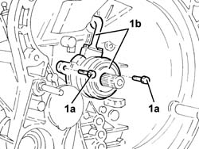

1820B38 hydraulic clutch actuator r r and bleed air with gearbox removed
- Path
- Procedures > 18 CLUTCH > 1820 CLUTCH RELEASE CONTROLS > 1820B HYDRAULIC CLUTCH SYSTEM > 1820B38 hydraulic clutch actuator r r and bleed air with gearbox removed
- Kind
- repair procedure (removal / refitting; the operation number is the code)
- Applies to
- all engines; all production periods
- Interactive page
- https://sloeber94.github.io/elrnDB-a147/en/#/3025112
Applies to: all engines; all production periods
 Removing
Removing
 Refitting
Refitting1. Undo the bolts (1a) and remove the hydraulic clutch actuator (1b).

Applies to: all engines; all production periods
Refitting
RemovingClean any residues of sealant from the matching surfaces between the hydraulic clutch actuator and the gearbox.
Apply silicon sealant to the matching surface of the hydraulic clutch actuator and the gearbox.
Place the hydraulic clutch actuator back in its housing and secure it by tightening the bolts to the recommended torque.
 | Fastening | Component | Ø | Value (daNm) |
|---|---|---|---|---|
- | Bolt | CLUTCH CONTROL HYDRAULIC ACTIVATOR | M8 | (Gearbox side) 1.0 |